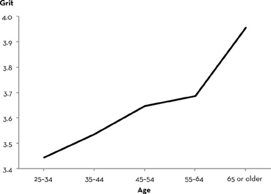

Chapter 5 Chapter 5
Chapter 5 Chapter 5“How much of our grit is in our genes?”
I’m asked some version of this question pretty much anytime I give a talk on grit. The nature-nurture question is a very basic one. We have an intuitive sense that some things about us—like our height—are pretty much determined in the genetic lottery, while other things—like whether we speak English or French—are a result of our upbringing and experience. “You can’t train height” is a popular expression in basketball coaching, and many people who learn about grit want to know if it’s more like height or more like language.
To the question of whether we get grit from our DNA, there is a short answer and a long one. The short answer is “in part.” The long answer is, well, more complicated. In my view, the longer answer is worth our attention. Science has made huge strides in figuring out how genes, experience, and their interplay make us who we are. From what I can tell, the inherent complexity of these scientific facts has led, unfortunately, to their continually being misunderstood.
To begin, I can tell you with complete conviction that every human trait is influenced by both genes and experience.
Consider height. Height is indeed heritable: genetic differences are a big reason why some people are really tall, some really short, and a bunch of people are of varying heights in between.
But it’s also true that the average height of men and women has increased dramatically in just a few generations. For instance, military records show that the average British man was five feet five inches tall about 150 years ago, but today that average is five feet ten inches. Height gains have been even more dramatic in other countries; in the Netherlands, the average man now stands almost six foot one—a gain of more than six inches over the last 150 years. I am reminded of these dramatic generational gains in height whenever I get together with my Dutch collaborators. They bend down solicitously, but it still feels like standing in a forest of redwoods.
It’s unlikely that the gene pool has changed all that dramatically in just a few generations. Instead, the most powerful height boosters have been nutrition, clean air and water, and modern medicine. (Incidentally, generational gains in weight have been even more dramatic, and again, that seems to be the consequence of eating more and moving around less rather than changes in our DNA.) Even within a generation, you can see the influence of environment on height. Children who are provided healthy food in abundance will grow up taller, whereas malnourishment stunts growth.
Likewise, traits like honesty and generosity and, yes, grit, are genetically influenced and, in addition, influenced by experience. Ditto for IQ, extroversion, enjoying the great outdoors, having a sweet tooth, the likelihood that you’ll end up a chain-smoker, your risk of getting skin cancer, and really any other trait you can think of. Nature matters, and so does nurture.
Talents, in all their varieties, are also genetically influenced. Some of us are born with genes that make it easier to learn to carry a tune, or dunk a basketball, or solve a quadratic equation. But against intuition, talents are not entirely genetic: the rate at which we develop any skill is also, crucially, a function of experience.
For instance, sociologist Dan Chambliss swam competitively in high school but stopped when it seemed clear he wasn’t going to make it as a nationally ranked swimmer.
“I’m small,” he explained, “and my ankles won’t plantar flex.” Come again? “I can’t point my toes. I can only flex them. It’s an anatomical limitation. Which means, basically, at the elite level, I could only swim breaststroke.” After our exchange, I did a little research on plantar flexion. Stretching exercises can improve your range of motion, but the length of certain bones does make a difference in how flexible your feet and ankles are.
Still, the biggest impediment to improving wasn’t anatomy; it was how he was coached: “In retrospect, I look back now and can see I had horribly bad coaches in a couple of crucial places. One of my high school coaches—I had him for four years—literally taught me zero. Nothing. He taught me how to do a breaststroke turn, and he taught me incorrectly.”
What happened when Dan did, finally, experience good coaching, in part from hanging around the national and Olympic coaches he was studying?
“Years later, I got back into the pool, got in shape again, and swam a two-hundred-yard individual medley as fast as I did in high school.”
Again, same story. Not just nature, and not just nurture. Both.
How do scientists know, with unwavering conviction, that both nature and nurture play a role in determining things like talent and grit? Over the past few decades, researchers have been studying identical and fraternal twins, raised in the same family or raised in different families. Identical twins have all the same DNA, while fraternal twins, on average, only share about half. That fact, and a whole lot of fancy statistics (well, not that fancy—more mundane, really, once a good teacher explains them to you), allows researchers to infer, from how similar the twins grow up to be, the heritability of a trait.
Very recently, researchers in London let me know they’d administered the Grit Scale to more than two thousand pairs of teenage twins living in the United Kingdom. This study estimated the heritability of the perseverance subscale to be 37 percent and the passion subscale to be 20 percent. These estimates are on par for heritability estimates for other personality traits, and in the simplest terms, this means that some of the variation in grit in the population can be attributed to genetic factors, and the rest can be attributed to experience.
I hasten to add that there isn’t just one gene that explains the heritability of grit. On the contrary, dozens of research studies have shown that almost all human traits are polygenic, meaning that traits are influenced by more than one gene. Many more, in fact. Height, for example, is influenced by, at last count, at least 697 different genes. And some of the genes that influence height influence other traits as well. In total, the human genome contains as many as twenty-five thousand different genes, and they tend to interact with one another and with environmental influences in complicated, still poorly understood, ways.
In sum, what have we learned? First: grit, talent, and all other psychological traits relevant to success in life are influenced by genes and also by experience. Second: there’s no single gene for grit, or indeed any other psychological trait.
I’d like to make a third, important point: heritability estimates explain why people differ from the average, but they say nothing about the average itself.
While the heritability of height says something about variability—why in a given population some people are taller and some shorter—it says nothing about how average height has changed. This is important because it provides evidence that the environment we grow up in really does matter, and it matters a lot.
Here’s another striking example, and one more relevant to the science of success: the Flynn effect. Named after Jim Flynn, the New Zealand social scientist who discovered it, the Flynn effect refers to startling gains in IQ scores over the past century. How big are the gains? On the most widely used IQ tests today—the Wechsler Intelligence Scale for Children and the Wechsler Adult Intelligence Scale—gains have averaged more than fifteen points in the last fifty years in the more than thirty countries that have been studied. Put another way, if you scored people a century ago against modern norms, they would have an average IQ score of 70—borderline for mentally retarded. If you scored people today against the norms of a century ago, we would have an average IQ score of 130—the typical cut score for mentally gifted programs.
When I first learned about the Flynn effect, I didn’t believe it. How could it be that we’re all getting that much smarter so quickly?
I called Jim to share my incredulity—and my desire to learn more—and, globe-trotter that he is, he actually flew all the way to Philadelphia to meet with me and give a talk on his work. At our first encounter, I remember thinking that Jim looked like a caricature of an academic: tall, a little bony, wire-rimmed glasses, and a rather unruly head of curly steel-gray hair.
Flynn began his talk with the basic facts on IQ change. Digging through the raw scores of IQ tests taken over the years, he found that the improvements on some tests were much bigger than others. He went to the chalkboard and sketched out a steep line indicating that scores had climbed most sharply for IQ tests assessing abstract reasoning. For instance, many young children today can answer the question “Dogs and rabbits: How are they alike?” They might tell you that both dogs and rabbits are alive, or that they’re both animals. In the scoring manual, these answers only earn a half credit. Some children might go so far as to say that they’re both mammals, and for that insight, they’d earn a full credit. In contrast, young children a century ago might look at you quizzically and say, “Dogs chase rabbits.” Zero points.
As a species, we’re getting better and better at abstract reasoning.
By way of explaining massive gains in certain IQ subtests but not in others, Flynn told a story about basketball and television. Basketball, at all levels of competition, has gotten more competitive over the last century. Flynn played a little ball himself as a student and remembers the game changing even within a few years. What happened?
According to Flynn, what happened was television. Basketball was a great game to watch on the small screen and the exposure fueled the game’s popularity. Once television became a household fixture, more kids started playing the game, trying left-handed layups, crossover dribbles, graceful hook shots, and other skills that seemed routine among star players. And by getting better, each kid inadvertently enriched the learning environment for the kids he or she was playing against. Because one thing that makes you better at basketball is playing with kids who are just a little more skilled.
Flynn called this virtuous cycle of skill improvement the social multiplier effect, and he used the same logic to explain generational changes in abstract reasoning. More and more, over the past century, our jobs and daily lives ask us to think analytically, logically. We go to school for longer, and in school, we’re asked, more and more, to reason rather than rely on rote memorization.
Either small environmental differences, or genetic ones, can trigger a virtuous cycle. Either way, the effects are multiplied socially, through culture, because each of us enriches the environment of all of us.
Here is a graph showing how Grit Scale scores vary by age. These are data from a large sample of American adults, and you can see from the horizontal axis that the grittiest adults in my sample were in their late sixties or older; the least gritty were in their twenties.

One explanation for this data is that there’s a sort of “reverse Flynn effect” for grit. For instance, it’s possible that adults in their seventh decade of life are grittier because they grew up in a very different cultural era, perhaps one whose values and norms emphasized sustained passion and perseverance more than has been the case recently. In other words, it could be that the Greatest Generation is grittier than the millennials because cultural forces are different today than yesterday.
This explanation for why grit and age go hand in hand was suggested to me by an older colleague who, looking over my shoulder at the same graph, shook his head and said, “I knew it! I’ve been teaching the same undergraduates the same course at the same university for decades. And I’ll tell you, they just don’t work as hard these days as they used to!” My dad, who gave his entire professional life as a chemist to DuPont and quite literally retired with the gold watch, might say the same of the Wharton entrepreneur who approached me after my lecture. Even while pulling all-nighters for his present venture, the young man half expected to be on to something entirely new within a few years.
Alternatively, it’s possible these age trends have nothing to do with generational changes in grit. Instead, what the data may be showing is how people mature over time. My own experience, and the stories of grit paragons like Jeff Gettleman and Bob Mankoff suggest that, indeed, grit grows as we figure out our life philosophy, learn to dust ourselves off after rejection and disappointment, and learn to tell the difference between low-level goals that should be abandoned quickly and higher-level goals that demand more tenacity. The maturation story is that we develop the capacity for long-term passion and perseverance as we get older.
To distinguish between these rival explanations, we need a different kind of study. To generate the data I just showed you, I asked people of different ages about their current level of grit. What I got was a snapshot of grit in younger and older adults. Ideally, I’d follow these people for the rest of their lives, the way psychologist George Vaillant followed the Harvard men. Since the Grit Scale hasn’t been around very long, I can’t play you a time-lapse movie of grit over the life course. What I want is that movie. What I have is a snapshot.
Fortunately, many other aspects of personality have been examined longitudinally. In dozens of studies that have followed people over years and decades, the trends are clear. Most of us become more conscientious, confident, caring, and calm with life experience. A lot of that change happens between the ages of twenty and forty, but, in fact, there’s no epoch in the human life span where personality stops evolving. Collectively, these data demonstrate what personality psychologists now call “the maturity principle.”
We grow up. Or at least, most of us do.
To some extent, these changes are preprogrammed and biological. Puberty and menopause are things that change our personalities, for example. But on the whole, personality change is more a function of life experience.
Exactly how do life experiences change personality?
One reason we change is that we learn something we simply didn’t know before. For instance, we might learn through trial and error that repeatedly swapping out one career ambition for another is unfulfilling. That’s certainly what happened to me in my twenties. After running a nonprofit, then pursuing neuroscience research, then management consulting, then teaching, I learned that being a “promising beginner” is fun, but being an actual expert is infinitely more gratifying. I also learned that years of hard work are often mistaken for innate talent, and that passion is as necessary as perseverance to world-class excellence.
Likewise, we learn, as novelist John Irving did, that “to do anything really well, you have to overextend yourself,” to appreciate that, “in doing something over and over again, something that was never natural becomes almost second nature,” and finally, that the capacity to do work that diligently “doesn’t come overnight.”
Other than insights about the human condition, what else is there that changes with age?
What changes, I think, are our circumstances. As we grow older, we’re thrust into new situations. We get our first job. We may get married. Our parents get older, and we find ourselves their caretakers. Often, these new situations call on us to act differently than we used to. And, because there’s no species on the planet more adaptable than ours, we change. We rise to the occasion.
In other words, we change when we need to. Necessity is the mother of adaptation.
Here’s a trivial example. Somehow, my youngest daughter, Lucy, reached the age of three without learning to use the potty. My husband and I had done our best to bribe, cajole, and trick her into leaving diapers behind. We’d read all the books about all the right things to do, and we’d tried to do all those things—or at least we tried as energetically as is possible for working parents with other things on their to-do lists. To no avail. Lucy’s will proved stronger than ours.
Soon after her third birthday, Lucy changed preschool classrooms: from the toddler classroom, where almost all the children were still in diapers, to the “big kid” classroom, which didn’t even have a changing table. The first day I dropped her off in the new room, her eyes widened to saucers, scanning this new environment—a little bit afraid, I think, and more likely than not wishing she could stay in her old room, where she’d grown comfortable.
I’ll never forget picking Lucy up that afternoon. She smiled at me proudly and announced she’d used the potty. And then, in so many words, she told me she was done with diapers. And she was. Potty training happened in a single moment in time. How? Because when a child lines up for the potty with all the other children and sees that she’s expected to take her turn, she does exactly that. She learns to do what she needs to do.
Bernie Noe, the headmaster of the Lakeside School in Seattle, recently shared the following story about his own daughter. It illustrates the maturity principle to a T. Noe’s family lives on campus, and as a teenager, his daughter was late to school almost every day. One summer, his daughter got a job folding clothes at the local American Eagle. On her first day, the store manager said, “Oh, by the way, the first time you’re late, you’re fired.” She was stunned. No second chances? All her life, there’d been patience, understanding, and second chances.
So then what happened?
“It was amazing,” Noe remembered. “Quite literally, it was the most immediate behavior change I’ve ever seen her make.” Suddenly, his daughter was setting two alarms to make sure she was on time, or early, to a job where being late was simply not tolerated. As a headmaster tasked with shepherding young people along toward maturity, Noe considers his power to do so somewhat limited. “If you’re a business, you don’t care whether a kid thinks they’re special. What you care about is ‘Can you deliver? If you can’t deliver, hey, we don’t have any use for you.’ ”
Lectures don’t have half the effect of consequences.
What the maturity principle comes down to, I think, is this. Over time, we learn life lessons we don’t forget, and we adapt in response to the growing demands of our circumstances. Eventually, new ways of thinking and acting become habitual. There comes a day when we can hardly remember our immature former selves. We’ve adapted, those adaptations have become durable, and, finally, our identity—the sort of person we see ourselves to be—has evolved. We’ve matured.
Taken together, the data I’ve collected on grit and age are consistent with two different stories. One story says that our grit changes as a function of the cultural era in which we grow up. The other story says that we get grittier as we get older. Both could be true, and I have a suspicion that both are, at least to an extent. Either way, this snapshot reveals that grit is not entirely fixed. Like every aspect of your psychological character, grit is more plastic than you might think.
If grit can grow, how does that happen?
I get emails and letters almost every day from people who wish they had more grit. They lament that they never stuck with anything in order to get really good at it. They feel they’ve squandered their talents. They desperately want a long-term goal, and they want to pursue that goal with passion and perseverance.
But they don’t know where to begin.
A good place to start is to understand where you are today. If you’re not as gritty as you want to be, ask yourself why.
The most obvious answer people come up with goes something like this: “I guess I’m just lazy.”
Here’s another: “I’m just a flake.”
Or: “I’m congenitally incapable of sticking with things.”
All of these answers, I think, are wrong.
In fact, when people drop out of things, they do so for a reason. Actually, they do so for different reasons. Any of the following four thoughts might go through your head right before you quit what you’re doing:
“I’m bored.”
“The effort isn’t worth it.”
“This isn’t important to me.”
“I can’t do this, so I might as well give up.”
There’s nothing wrong—morally or otherwise—with thoughts like these. As I tried to show in this chapter, paragons of grit quit goals, too. But the higher the level of the goal in question, the more stubborn they are about seeing it through. Most important, paragons of grit don’t swap compasses: when it comes to the one, singularly important aim that guides almost everything else they do, the very gritty tend not to utter the statements above.
A lot of what I’ve learned about how grit grows comes from interviewing men and women who epitomize the qualities of passion and perseverance. I’ve included snippets of those conversations throughout this book so that you, too, can peer inside the mind and heart of a grit paragon and see whether there’s a belief, attitude, or habit worth emulating.
These stories of grit are one kind of data, and they complement the more systematic, quantitative studies I’ve done in places like West Point and the National Spelling Bee. Together, the research reveals the psychological assets that mature paragons of grit have in common. There are four. They counter each of the buzz-killers listed above, and they tend to develop, over the years, in a particular order.
First comes interest. Passion begins with intrinsically enjoying what you do. Every gritty person I’ve studied can point to aspects of their work they enjoy less than others, and most have to put up with at least one or two chores they don’t enjoy at all. Nevertheless, they’re captivated by the endeavor as a whole. With enduring fascination and childlike curiosity, they practically shout out, “I love what I do!”
Next comes the capacity to practice. One form of perseverance is the daily discipline of trying to do things better than we did yesterday. So, after you’ve discovered and developed interest in a particular area, you must devote yourself to the sort of focused, full-hearted, challenge-exceeding-skill practice that leads to mastery. You must zero in on your weaknesses, and you must do so over and over again, for hours a day, week after month after year. To be gritty is to resist complacency. “Whatever it takes, I want to improve!” is a refrain of all paragons of grit, no matter their particular interest, and no matter how excellent they already are.
Third is purpose. What ripens passion is the conviction that your work matters. For most people, interest without purpose is nearly impossible to sustain for a lifetime. It is therefore imperative that you identify your work as both personally interesting and, at the same time, integrally connected to the well-being of others. For a few, a sense of purpose dawns early, but for many, the motivation to serve others heightens after the development of interest and years of disciplined practice. Regardless, fully mature exemplars of grit invariably tell me, “My work is important—both to me and to others.”
And, finally, hope. Hope is a rising-to-the-occasion kind of perseverance. In this book, I discuss it after interest, practice, and purpose—but hope does not define the last stage of grit. It defines every stage. From the very beginning to the very end, it is inestimably important to learn to keep going even when things are difficult, even when we have doubts. At various points, in big ways and small, we get knocked down. If we stay down, grit loses. If we get up, grit prevails.
Without the meddling of a psychologist like me, you may have figured grit out all on your own. You may already have a deep and abiding interest, a ready appetite for constant challenge, an evolved sense of purpose, and buoyant confidence in your ability to keep going that no adversity could sink. If so, you’re probably close to 5 out of 5 on the Grit Scale. I applaud you!
If, on the other hand, you’re not as gritty as you wish you were, then there’s something for you in the chapters that follow. Like calculus and piano, you can learn the psychology of grit on your own, but a little guidance can be a tremendous help.
The four psychological assets of interest, practice, purpose, and hope are not You have it or you don’t commodities. You can learn to discover, develop, and deepen your interests. You can acquire the habit of discipline. You can cultivate a sense of purpose and meaning. And you can teach yourself to hope.
You can grow your grit from the inside out. If you’d like to know how, read on.